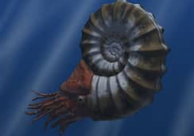
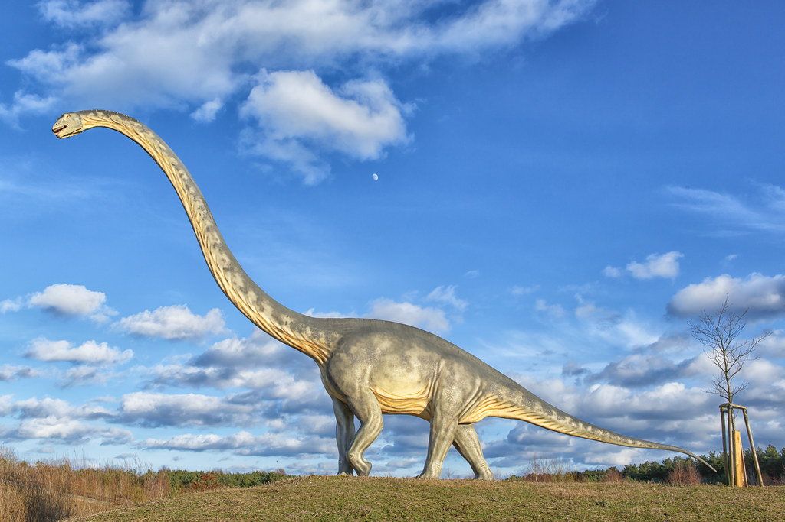
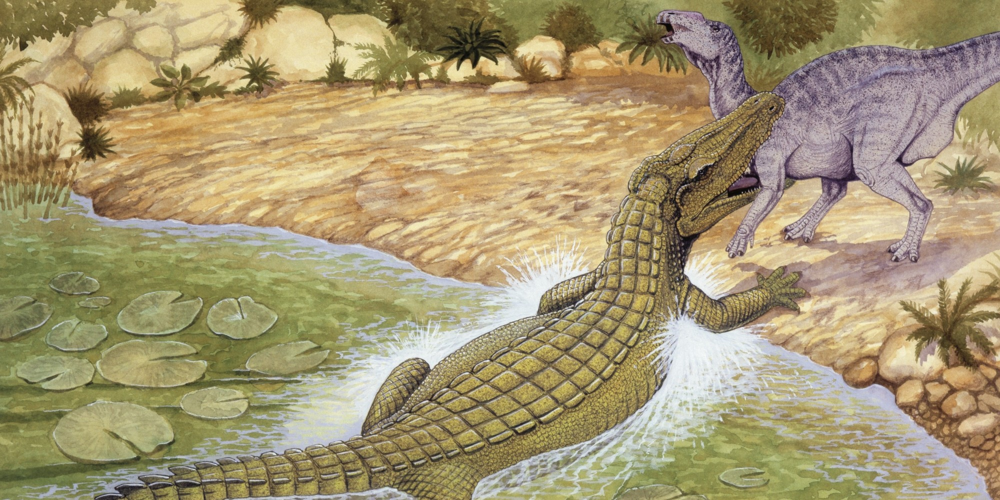
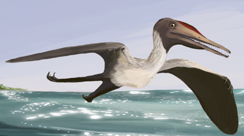

El Jurásico medio:
Empezó hace 175 millones de años y termino hace 165 millones de años.
Encuanto a animales terrestres destacan:
Destacan las grandes manadas de sauropodos.
los brachiosaurus  los diplodocus
los diplodocus
 los allosaurus
los allosaurus
Eran los grandes depredadore del jurásico medio, median entorno a los 9 metros de altos y los 7 de largo.
 los amonites
Son unos moluscos muy frecuentes en el Jurásico y que desaparecieron hace unos 400 millones de años. Y es unos de
los fósiles guías más fácil de encontrar debido a su distribución
Encuanto a los animales Terrestre:
Aparecieron:
 los heterodontosáuridos
los heterodontosáuridos
Eran unos animales de unos dos metros de altura, con unos caractéristicos dientes, que empezaron a vivir a principos del Jurásico
y terminaron su existencia en el Cretácico.
 los Mamenchisaurus
Eran unos animales saurópodos de unos 40 metros de altura, que empezaron a vivir a principos del Jurásico
y terminaron su existencia hace uno 145 millones de años.
 cocodrilos
Los cocodrilos evolucionan, llevando a los grandes anfibios casi a la extinción.
También existian agulos animales mamíferos, como los sinápsidos. Y de aves como: pterosaurios.

 Dimetrodon
Dimetrodon
 Etapas Etapas |
 Inicio Inicio |
 Jurásico Medio Jurásico Medio |
 Jurásico tardío Jurásico tardío |